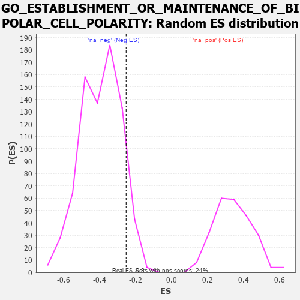

| | | Dataset | 7d |
| Phenotype | NoPhenotypeAvailable |
| Upregulated in class | na_neg |
| GeneSet | GO_ESTABLISHMENT_OR_MAINTENANCE_OF_BIPOLAR_CELL_POLARITY |
| Enrichment Score (ES) | -0.25219926 |
| Normalized Enrichment Score (NES) | -0.639451 |
| Nominal p-value | 0.91017175 |
| FDR q-value | 1.0 |
| FWER p-Value | 1.0 |
Table: GSEA Results Summary
 Fig 1: Enrichment plot: GO_ESTABLISHMENT_OR_MAINTENANCE_OF_BIPOLAR_CELL_POLARITY
Fig 1: Enrichment plot: GO_ESTABLISHMENT_OR_MAINTENANCE_OF_BIPOLAR_CELL_POLARITY
Profile of the Running ES Score & Positions of GeneSet Members on the Rank Ordered List
| PROBE | GENE SYMBOL | GENE_TITLE | RANK IN GENE LIST | RANK METRIC SCORE | RUNNING ES | CORE ENRICHMENT | | 1 | FOXF1 | | | 176 | 1.136 | 0.1189 | No |
| 2 | FSCN1 | | | 297 | 0.830 | 0.2068 | No |
| 3 | LRRC7 | | | 2080 | 0.294 | 0.0191 | No |
| 4 | PARD3 | | | 3584 | 0.063 | -0.1621 | No |
| 5 | TCF15 | | | 4077 | -0.020 | -0.2215 | No |
| 6 | WNT11 | | | 4282 | -0.056 | -0.2402 | No |
| 7 | LIN7B | | | 4370 | -0.071 | -0.2423 | Yes |
| 8 | ARF4 | | | 4383 | -0.073 | -0.2347 | Yes |
| 9 | ILK | | | 4510 | -0.096 | -0.2386 | Yes |
| 10 | DLG5 | | | 4619 | -0.121 | -0.2372 | Yes |
| 11 | PTK7 | | | 4687 | -0.136 | -0.2287 | Yes |
| 12 | LHX2 | | | 4716 | -0.143 | -0.2145 | Yes |
| 13 | WDR1 | | | 4824 | -0.163 | -0.2077 | Yes |
| 14 | DLG1 | | | 4860 | -0.169 | -0.1911 | Yes |
| 15 | MARK2 | | | 4899 | -0.177 | -0.1738 | Yes |
| 16 | FAT1 | | | 5281 | -0.267 | -0.1887 | Yes |
| 17 | MTCL1 | | | 5697 | -0.374 | -0.1945 | Yes |
| 18 | DLG2 | | | 6126 | -0.513 | -0.1846 | Yes |
| 19 | CDC42 | | | 6236 | -0.548 | -0.1303 | Yes |
| 20 | LAMA1 | | | 6496 | -0.659 | -0.0810 | Yes |
| 21 | ANK1 | | | 7815 | -2.146 | 0.0196 | Yes |
Table: GSEA details [plain text format]

Fig 2: GO_ESTABLISHMENT_OR_MAINTENANCE_OF_BIPOLAR_CELL_POLARITY: Random ES distribution
Gene set null distribution of ES for GO_ESTABLISHMENT_OR_MAINTENANCE_OF_BIPOLAR_CELL_POLARITY